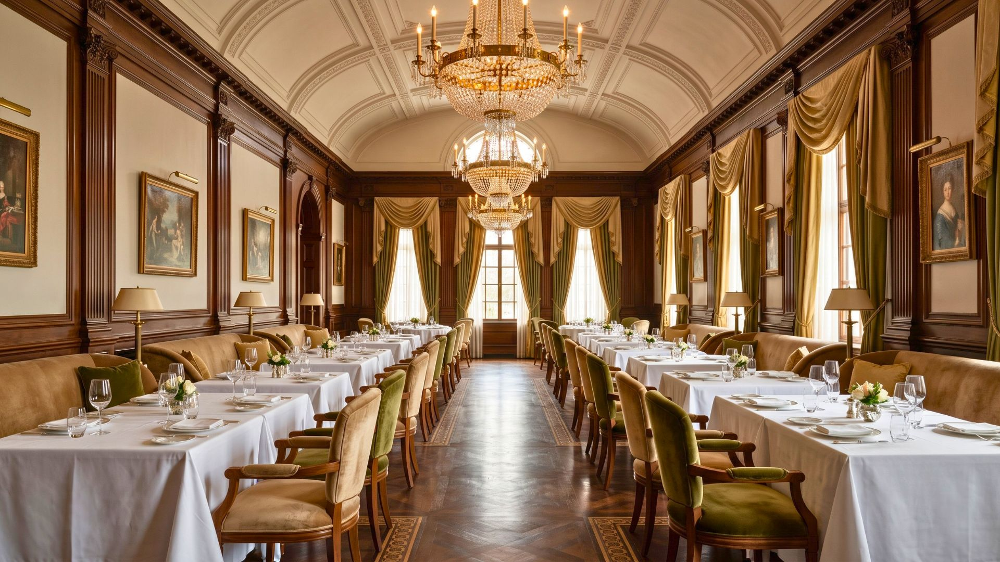
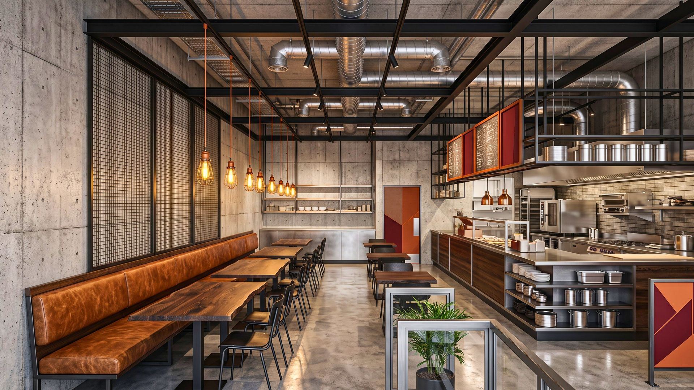
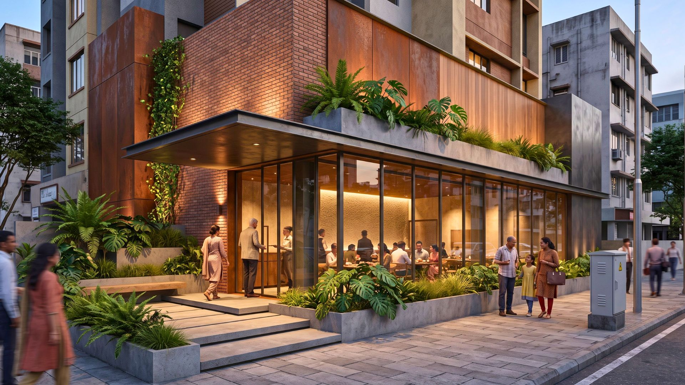
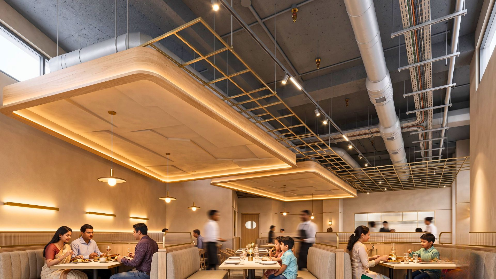
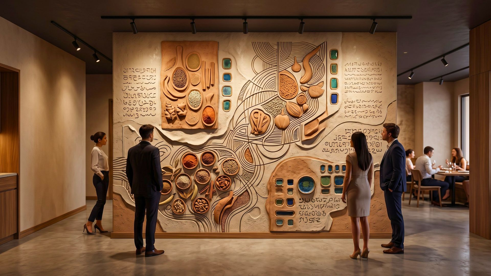
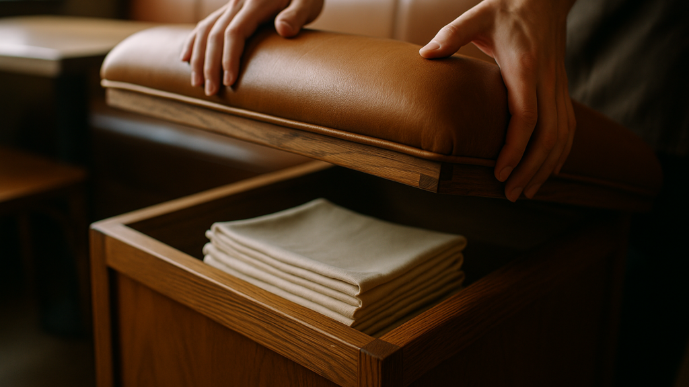
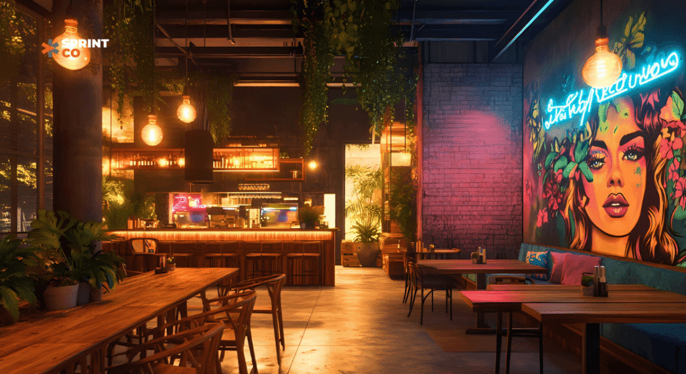
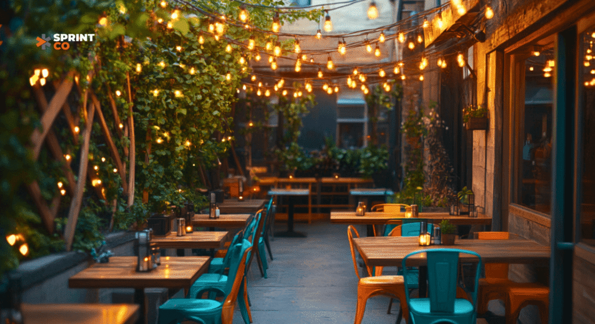

The best restaurant interior design ideas do two jobs at once: they make guests want to walk in, stay and come back, and they make the space easier and cheaper to run. This guide brings together the ideas we use most across 4,000+ F&B projects, from choosing a style to designing for Gen Z, with practical tips you can apply whether you are opening your first outlet or refreshing an existing one.
1. Start With a Style That Fits Your Menu
Choose a style from your menu and format, not from a mood board. Style shapes the whole guest experience and extends beyond looks into services and maintenance. The six most common restaurant styles:

- Classic: sophistication and fine dining. Velvet chairs, upholstered sofas, rich drapes; yellows, browns, greens and beige in velvet, silk and leather. The most expensive to maintain, but always in demand.
- Contemporary: clean, straight lines and little ornament. Suits casual restaurants and cafés, in steel, glass, leather and polished wood with bold or soft palettes.
- Minimalist: solid surfaces, sharp lines and pastel shades in wood, cotton and metal. Popular for casual dining and bakeries.
- Industrial: inspired by old factories, in steel and sturdy metals. Bold, durable and among the most affordable styles, which makes it a favourite for QSRs.
- Bohemian: layered patterns, vintage pieces and natural textures in fabric, wood and bamboo. The most room for self-expression, ideal for vintage-themed cafés.
- Rustic: nostalgic and traditional, in wood, bamboo and plants, supporting local artisans. Suits teahouses and tavernas.

2. Make the Facade an Invitation
Your exterior is more than an entrance. Align the facade with your interiors and signage, use smart outdoor lighting, and keep the front transparent enough to show what is happening inside. Sliding or folding doors can merge indoor and outdoor seating, and an air curtain keeps that transition energy-efficient.

3. Work the Ceiling, Floor and Walls
- Ceilings: combine false and raw ceilings. Covered sections hide services and reduce cooling costs; open grids add character and keep utilities accessible.
- Floors: use different flooring materials and patterns to define seating zones, and borders to mark aisles.
- Walls: let them tell your story with typography, murals and art, while keeping the room from feeling cluttered. One strong feature wall usually beats four busy ones.

4. Layer Lighting and Bring in Greenery
Warm lighting paired with greenery lifts almost any space. Layer ambient, task and accent light so the room works from lunch to late dinner, and add plants, vertical gardens or living walls, choosing energy-efficient fittings. For bars, see our bar lighting design ideas.

5. Put the Order Counter in the Right Place
Counter position affects customer flow and sales more than most owners expect. Make it visible from across the room, use single-line queuing so service feels fair, and keep pickup and delivery riders out of the dining path. In QSRs and cafés, the counter is the engine of the business; see our QSR layout design tips.
6. Space-Saving Ideas for Compact Restaurants
With rising rents and smaller sites, every square foot has to earn. A well-planned compact layout improves circulation, speeds up cleaning, allows flexible zoning for dine-in, takeaway and waiting, and raises revenue per square foot.
- Modular furniture: pieces that can be assembled, reconfigured or moved help brands open faster and stay consistent across outlets.
- Hidden storage: under-bench drawers, lift-up seats and wall racks keep essentials close but out of sight, so the room feels bigger.
- Foldable and stackable pieces: nesting chairs, stackable stools and extendable counters let a café by morning become a bar by night.
- Furniture as zoning: booths, planters and shelving divide dine-in from takeaway, or casual from premium, without fixed partitions.
- Space-expanding finishes: light oak and birch, metal accents, and easy-clean laminate and quartz make a compact outlet feel larger.

Done well, the gains are real: switching a 400 sq ft café to a modular FlatPack fit-out can take it from 12 seats to 20, with better movement and hidden storage. If budget is tight, read our low-budget restaurant interior design ideas and small restaurant kitchen design guide.
7. Design for Gen Z and Millennials
Gen Z, born between 1997 and 2012, already drives a large share of India's eating-out spend, and millennials are close behind. They choose places that feel real, look good on camera and suit how they socialise.
- Be authentic: tell the story behind your menu, source locally where you can, and don't over-polish. Handwritten specials and visible craft feel more real than sterile perfection.
- Create shareable moments: a statement wall, mural or neon sign, a photo corner and creative plating give guests a reason to post.
- Design for groups and work: communal tables for sharing, plus corners with Wi-Fi and charging points for guests who mix meals with study or work.
- Use the outdoors: string lights, plants and bold weather-resistant seating turn even a small outdoor area into an evening draw on a modest budget.
- Make tech seamless: QR menus, easy digital payment and app-based loyalty fit how younger guests already order.
- Pick seating with personality: mix chair styles and colours, but keep them comfortable and commercial-grade so they last.
- Design the menu too: bold typography and highlighted signature dishes make the menu itself something guests share.


Final Thoughts
Great restaurant interiors start with the menu and the business model, then layer style, light, flow and storytelling on top. Pick the ideas that fit your format and site, and spend where guests and staff feel it most. For more inspiration, see our café design ideas, luxury bar interior design ideas and the latest restaurant design trends in India.
Planning a restaurant? SprintCo designs and builds restaurants, cafés, bars and QSRs across India. Talk to our team.